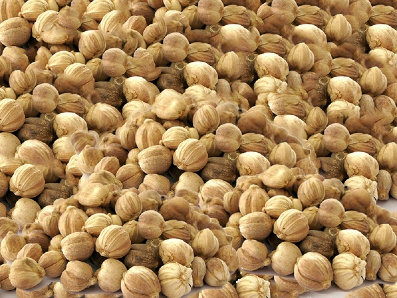

กระวาน
กระวานเป็นพืชล้มลุก มีเหง้า ความสูงสุดประมาณ 2 เมตร ลักษณะต้นเป็นกาบใบหุ้มซ้อนกัน จึงทำให้ดูคล้ายลำต้น เป็นพืชใบเดี่ยว ใบแคบยาว ขอบขนาน มีขนาดยาว 15-25 ซม. ปลายใบแหลม ช่อดอกจะออกจากเหง้าชูและขึ้นมาเหนือพื้นดิน เป็นรูปทรงกระบอก ยาว 6-15 ซม. ก้านของช่อดอกยาว 5-15 ซม. ใบประดับสีเหลืองนวล กลีบดอกสีเหลือง เป็นหลอดแคบ
ลักษณะผลมีสีนวล และค่อนข้างกลม ภายในผลแบ่งออกเป็น 3 พู ผลอ่อนจะมีขนและจะร่วงไปเมื่อผลแก่ เมล็ดมีขนาดเล็ก โดยเมล็ดอ่อนจะมีสีขาวและมีเยื่อหุ้ม เมื่อแก่จัดจะเปลี่ยนเป็นสีดำ นอกจากนี้ผลและเมล็กของกระวานยังมีกลิ่นหอมคล้ายการบูรอีกด้วย
การปลูกกระวานควรปลูกเป็นพืชแซมไม้ผล ไม้ยืนต้นเพื่อให้ร่มเงา การขยายพันธุ์ควรใช้เหง้าซึ่งเป็นวิธีขยายพันธุ์ที่นิยมเพราะ กระวานจะให้ดอกผลเร็วกว่าการขยายพันธุ์โดยการใช้เมล็ดปลูกเหง้าที่ใช้เพาะปลูก ควรแยกออกจากกอแม่ที่มีอายุไม่น้อยกว่า 18 เดือน ถึง 2 ปี และเหง้าที่แยกออกมาควรมีหน่อติดมาด้วยประมาณ 2 - 3 หน่อ และหน่อที่ใช้ควรมีความสูงประมาณ 1 - 2.5 ผุด หลุมปลูกกระวานควรมีขนาดกว้าง x ยาว x ลึก ประมาณ 50 x 50 x 50 เซนติเมตร ระยะห่างระหว่างต้นและแถว 2 x 2 เมตร ไม่นิยมปลูกชิดมากต้องเว้นพื้นที่ว่างไว้ให้หน่อได้ขยายเพิ่มขึ้นทุกๆ ปี ฝังหน่อลึกประมาณ 3 - 4 นิ้ว รดน้ำให้ความชุ่มชื้น
กระวานเป็นพืชที่ไม่ต้องดูแลรักษามาก ควรกำจัดวัชพืชบ้าง ที่สำคัญควรทำการริดใบ โดยตัดใบและลำต้นที่แห้ง แก่ตายหรือมีลักษณะที่ไม่สมบูรณ์ออกให้หมด เพื่อให้สะดวกในการเก็บเกี่ยว การป้องกันกำจัดโรคและแมลงศัตรูพืช ปกติกระวานไม่ค่อยมีโรคและแมลงรบกวนมากนัก นอกจากโรคใบไหม้ซึ่งอาจจะเกิดจากการได้รับแสงแดดมากเกินไป ส่วนศัตรูอื่นได้แก่ หนู กระรอก และกระแต ซึ่งจะกัดทำลายเม็ดในระยะรอเก็บเกี่ยว การตัดหน่อกระวานออกจากต้นแม่เพื่อใช้ประโยชน์อย่างอื่นนั้น จะมีผลกระทบกระเทือนต่อการติดผลของกระวาน
ราก - นำมาต้มดื่มจะช่วยในการฟอกเลือด ขับลม รักษาโรครำมะนาด และละลายเสมหะ
หัวและหน่อ - ใช้ในการขับพยาธิในเนื้อให้ออกมา นอกจากนี้ยังสามารถรับประทานคู่กับน้ำพริกได้อีกด้วย
เปลือก - แก้ไข้ แก้อาการผอมและตัวเหลือง รักษาโรคผิวหนังบางชนิด ขับเสมหะ บำรุงธาตุ
แก่น - รักษาอาการโลหิตเป็นพิษ
ใบ - ขับลม แก้อาการจุกเสียดแน่นอนท้อง ท้องเฟ้อ บำรุงธาตุ บำรุงร่างกาย และรักษาอาการโรครำมะนาด
กระพี้ - รักษาโรคผิวหนังบางชนิด และบำรุงโลหิต
ลูกกระวาน - ผลแก้ของกระวานมีฤทธิ์ช่วยขับลม และช่วยยับยั้งการเจริญเติบโตของเชื้อแบคทีเรีย ช่วยขับเลือดเสีย บำรุงธาตุ ช่วยให้เจริญอาหาร รักษาโรครำมะนาด แก้อาการจุกเสียดแน่นอนท้อง แก้ท้องเฟ้อ
เมล็ด - แก้อาการอาหารไม่ย่อย แก้อาการท้องผูก บำรุงธาตุ
ควรเก็บเมื่อมีผลแก่จัด 3 ใน 4 ของช่อ ปลิดเอาเฉพาะผลแก่ไปทำแห้งหรือทยอยเก็บเฉพาะผลแก่